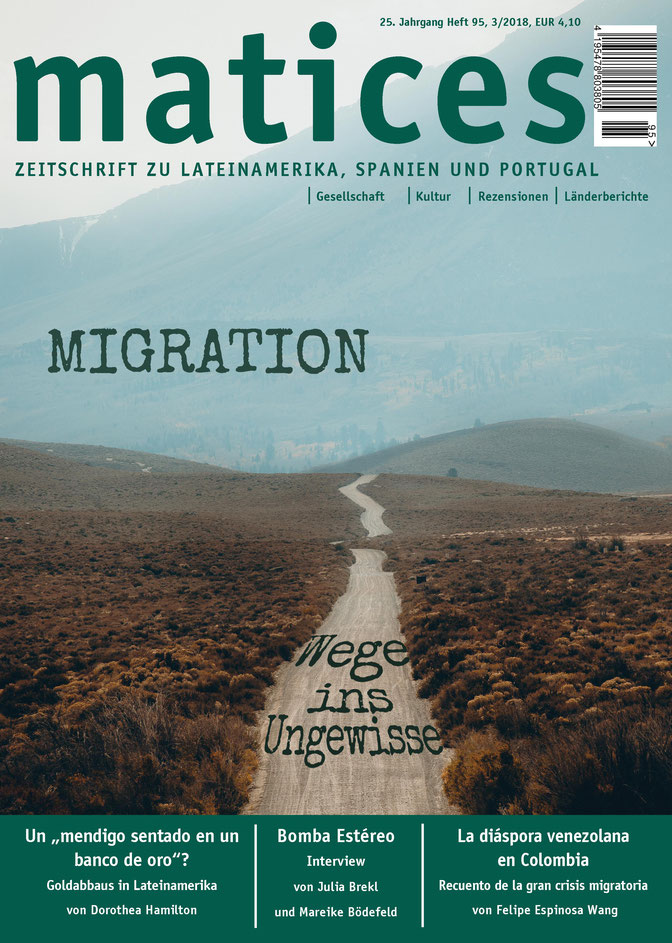

Ausgabe 95: Migration – Wege ins Ungewisse
Migration – lateinisch migratio (der Umzug) - bezeichnet die längerfristige Verlegung des Lebensmittelpunktes an einen anderen Wohnort. Seit jeher begleitet Migration die Menschheitsgeschichte und hat wesentlich zur kulturellen Entwicklung von Gesellschaften beigetragen. Dennoch wird sie meist erst bei Konflikten sichtbar. Im Zuge der Globalisierung hat Migration neue Dimensionen erreicht. So leben heute mehr als 250 Mio. Menschen mit steigender Tendenz außerhalb ihrer Herkunftsländer.
Für die betroffenen Länder hat die Migration nicht nur Auswirkungen auf die Gesellschaft, sondern auch auf die Wirtschaft, Politik und Kultur. Hinzu kommt, dass mit dem Thema „Migration“ oft auch andere Aspekte wie Flucht, Rassismus und soziale Konflikte in Verbindung gebracht werden. Doch welche Einflüsse hat die Migration auf die Auswanderer*innen? Welche Identitäten entwickeln sie während des Umzugs?
Auch wenn die Schicksale der Migration sehr individuell verlaufen, so ist vielen Migrant*innen doch eins gemein: das Verlassen der Heimat aus wirtschaftlichen und politischen Gründen. Sie suchen woanders Sicherheit, ein besseres Leben und eine vielversprechendere Zukunft. Wo aber führt sie der Weg der Migration tatsächlich hin?
Die Antwort auf diese Frage ist oft nicht eindeutig zu beantworten. Aus diesem Grund lautet der Titel der 95. Ausgabe von matices „Migration. Wege ins Ungewisse“. Im Rahmen dieses Themenschwerpunktes werden Probleme und Perspektiven, die mit der Auswanderung verbunden sind, veranschaulicht. Ein Interview mit zwei Auswanderer*innen aus Nicaragua thematisiert die Massenmigration, die durch die aktuelle politische Krise in dem mittelamerikanischen Staat hervorgerufen wird. Dass Migration auch innerhalb des eigenen Herkunftslandes stattfinden kann, verdeutlicht ein Beitrag zur Situation der Binnenmigration in Mexiko und Kolumbien. Welche Strategien Migrant*innen während ihrer Flucht und Migration zum Erreichen ihres Ziellandes entwickeln, behandelt unter anderem der Artikel “Wollen sie eine Mauer ins Meer bauen?”.
Heutzutage beschränkt sich Migration längst nicht nur auf die Verlagerung des Wohnortes, sondern beinhaltet einen Komplex an Identitäten, Motiven und Barrieren, der Migrant*innen auf ihren Weg in eine ungewisse Zukunft begleitet. Eine der größten Barrieren, mit der Migrant*innen weltweit konfrontiert sind, ist dabei wohl die Schwierigkeit, akzeptiert zu werden und nicht mehr als Fremde wahrgenommen zu werden.
Diese Ausgabe von matices versucht verschiedene Lebenswirklichkeiten von Migrant*innen zu beleuchten, kritisch zu hinterfragen und nicht zuletzt Migrant*innen selbst zu Wort kommen zu lassen.